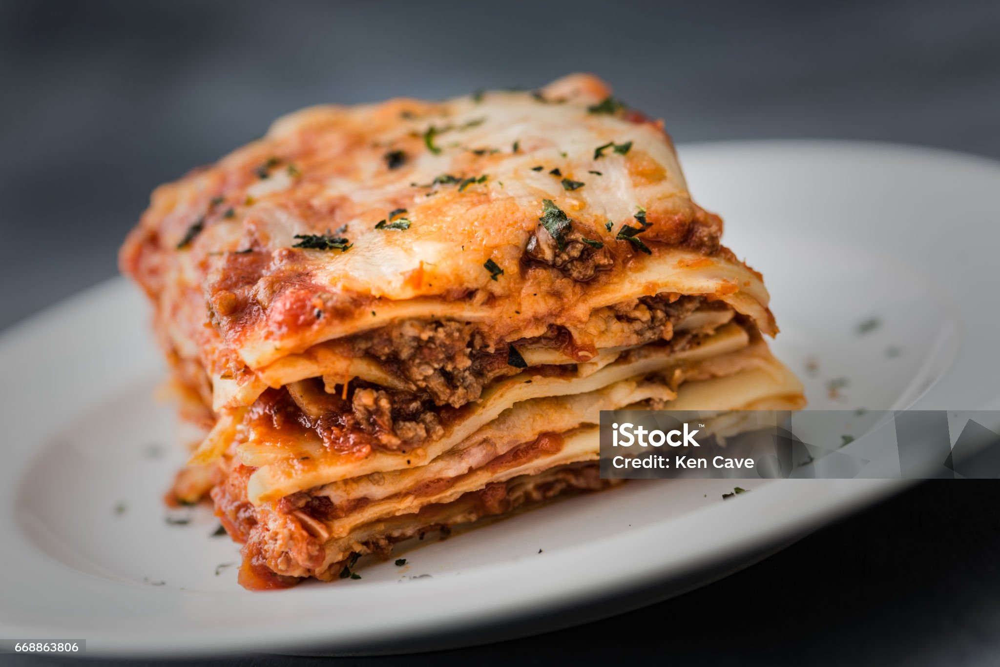

American Lasagna

Description
American Lasagna is a classic baked dish known for its rich layers and bold, comforting flavors.
Ingredients
- 12 lasagna noodles
- 1 pound ground beef (or Italian sausage)
- 1 small onion, finely chopped
- 3 cloves garlic, minced
- 1 (24-ounce) jar tomato sauce or marinara sauce
- 1 teaspoon Italian seasoning (or a mix of dried basil, oregano, thyme)
- Salt and pepper, to taste
- 1 tablespoon olive oil
- 15 ounces ricotta cheese
- 1 large egg (optional, to mix with ricotta)
- 3 cups shredded mozzarella cheese
- 1/2 cup grated Parmesan cheese
- 1 teaspoon sugar (optional, to cut acidity)
Steps
- Preheat oven to 375°F (190°C).
- Cook the noodles: Bring a large pot of salted water to a boil.
- Cook lasagna noodles according to package instructions until al dente.
- Drain and lay flat on a baking sheet or drizzle lightly with oil to prevent sticking.
- Heat olive oil in a large skillet over medium heat.
- Add chopped onion and sauté until translucent (about 3-4 minutes).
- Add minced garlic and cook for another 30 seconds.
- Add ground beef and cook until browned, breaking it up with a spoon. Drain excess fat if needed.
- Stir in tomato sauce, Italian seasoning, sugar (if using), salt, and pepper.
- Let the sauce simmer on low for about 10 minutes.
- In a bowl, combine ricotta cheese with the egg (if using) and a pinch of salt. Mix well.
- Spread a thin layer of meat sauce on the bottom of a 9x13-inch baking dish.
- Layer 4 noodles over the sauce.
- Spread 1/3 of the ricotta mixture over the noodles.
- Sprinkle 1 cup mozzarella over the ricotta.
- Add about 1/3 of the meat sauce over the cheese layer.
- Repeat the layers two more times (noodles, ricotta, mozzarella, meat sauce).
- Finish with a final layer of noodles topped with remaining meat sauce and sprinkle Parmesan cheese on top.
- Cover with aluminum foil (to prevent cheese from burning).
- Bake for 25 minutes, then remove the foil and bake an additional 20-25 minutes until bubbly and golden on top.
- Let the lasagna sit for about 10-15 minutes before cutting. This helps it set and makes serving easier.
Home